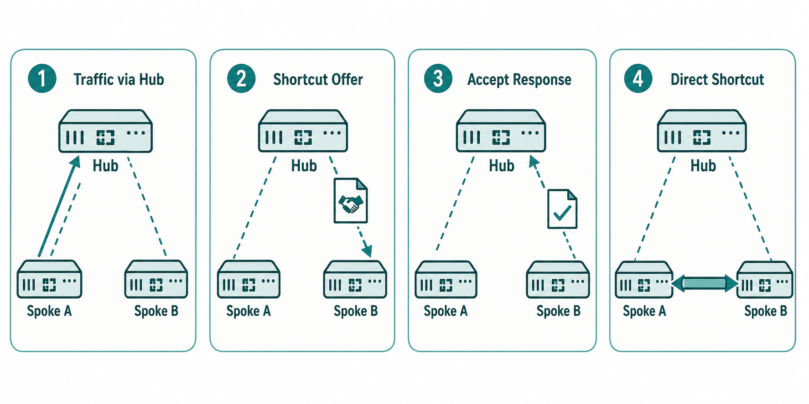

Overview
An ADVPN shortcut is a dynamically negotiated IPsec tunnel between two spoke FortiGates that forms on demand when traffic flows between them. Unlike the permanent hub tunnels that are configured statically and maintained continuously, shortcut tunnels do not exist until traffic triggers their creation, and they are torn down after a configurable idle period passes with no traffic. The shortcut establishment process is an IKE exchange facilitated by the hub: the hub detects spoke-to-spoke traffic, sends a shortcut offer to the destination spoke, the destination spoke accepts and returns its connection information, and the two spokes complete the IKE negotiation directly between themselves — the hub steps out of the data plane from that point forward.
The exact sequencing of the shortcut establishment process matters for both operations and exam purposes. When Spoke A sends traffic to Spoke B's subnet, the first packets are forwarded through the hub (since that is the only path available). The hub's ADVPN logic detects this transit traffic and sends an IKE shortcut offer to Spoke B, including Spoke A's tunnel endpoint address. Spoke B, if configured with set auto-discovery-receiver enable, accepts the offer and begins IKE negotiation directly with Spoke A. Spoke A, if configured with set auto-discovery-forwarder enable, completes the IKE exchange. Once the shortcut is established, subsequent packets from Spoke A to Spoke B use the direct tunnel. The hub continues forwarding the initial packets during this negotiation window — typically a few hundred milliseconds — before the shortcut takes over.
Shortcut tunnels have a finite lifetime governed by idle timeouts. When no traffic flows through a shortcut for the configured idle period (default 15 minutes), the shortcut is torn down and the IPsec security associations are cleared. The next packet from Spoke A to Spoke B will again traverse the hub and trigger a new shortcut negotiation. This behavior keeps the shortcut table lean in large deployments where most spoke pairs rarely communicate — only the active spoke-to-spoke pairs maintain shortcuts at any given time. Understanding the full lifecycle — formation, forwarding, idle detection, teardown, re-negotiation — is essential for ADVPN troubleshooting and is a recurring focus of NSE7 examination questions.

ADVPN shortcut establishment step-by-step flow
Target Questions
These are the questions your Socratic session will explore. Read them before you start — they tell you what understanding to look for while reviewing the study guide.
- 1Walk through the ADVPN shortcut establishment process step by step — what happens from first packet to shortcut tunnel active?
- 2What specific flags must be set on the hub and on spokes for shortcuts to work?
- 3What happens to the shortcut tunnel when there is no traffic between two spokes for an extended period?
- 4How does the hub's routing change when a shortcut is established between two spokes?
- 5What FortiGate CLI command shows active ADVPN shortcut tunnels?
- 6What is the difference between an "offered" shortcut and an "accepted" shortcut in ADVPN terminology?
- 7What happens if one spoke is behind NAT — can a shortcut still be established, and if so, how?